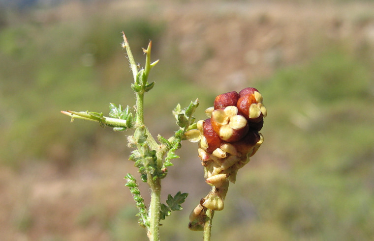
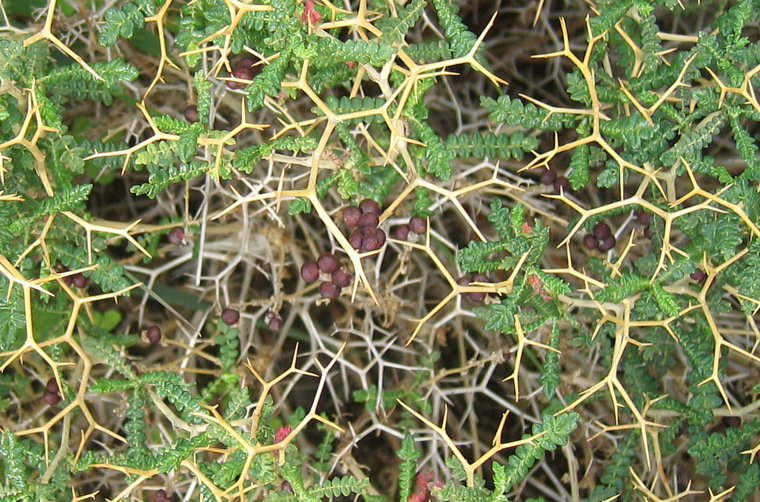
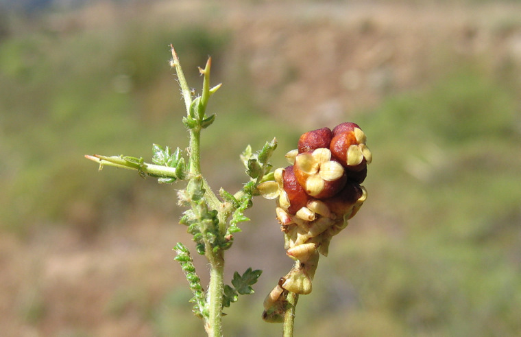
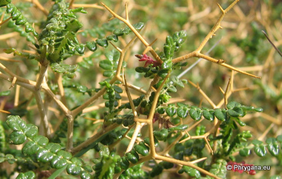
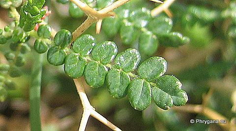
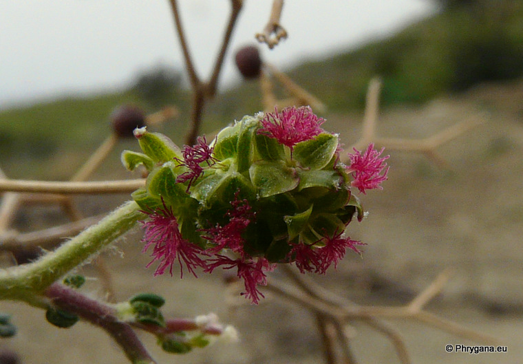

Sarcopoterium spinosum Apodoulu 06 juin 2005
Sarcopoterium spinosum Melambes (Agios Giorgos) 03 novembre 2006
Sarcopoterium spinosum Melambes (Agios Giorgos) 17 février 2010
 SPACH")
Sarcopoterium spinosum Melambes (Agios Giorgos) 29 octobre 2006
| PHRYGANA | Fauna | Flora |
additions nouveautés |
espèces species |
contact -
info - commentaires phrygana1 (at) gmail.com |
| diversité crétoise -- Cretan diversity | |||||
| Sarcopoterium spinosum (L.) SPACH |
| 16 | Flora | ROSACEAE | Sarcopoterium |
 Sarcopoterium spinosum Melambes (Agios Giorgos) 06 novembre 2006 |
| en: Thorny burnet fr: la Pimprenelle épineuse | |
| Arbuste épineux, touffu, en boule, avec les rameaux entrelacés. | |
| Feuilles: vert brillant, composées imparipennées. Les folioles sont petites, ovales-elliptiques, courtement pétiolées. Les jeunes rameaux sont pubescents, terminés par une pointe. | |
| Fleurs: sans corolle, groupées en petites têtes serrées (parfois longues de 20 à 30 mm). Les fleurs femelles ont des styles plumeux rouge vif tandis que les mâles ont de nombreuses étamines jaunes. | |
| Fruit: une petite baie rouge devenant brune à maturité | |
| Hauteur: 20 - 50 (-70) cm | Type biologique: chaméphyte frutescent caducifolié |
| Floraison: février mars avril mai juin | |
| Altitudes: 0 - 2000 m | |
| Statut en Crète: indigène -- native | |
| Biotopes en Crète: phrygana, garrigue, lieux de cultures délaissés. | |
| Distribution: région Méditerranéenne orientale | |
 Sarcopoterium spinosum Apodoulu 06 juin 2005 |
|

 Sarcopoterium spinosum Melambes (Agios Giorgos) 03 novembre 2006 |
|
 Sarcopoterium spinosum Melambes (Agios Giorgos) 17 février 2010 |
|
Sarcopoterium spinosum Melambes (Agios Giorgos) 29 octobre 2006 |
| 03 décembre 2010 |
| © paul fontaine -- © Phrygana.eu 2007 -- 2013 |